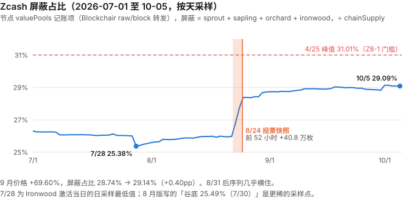
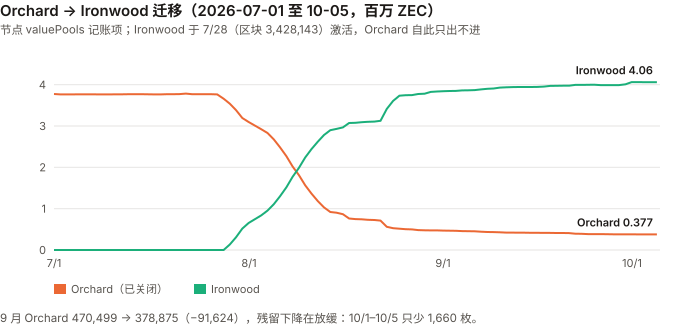

ZEC / Zcash 完整调研与分析报告
编写日期：2026 年 10 月 5 日
数据截止：2026 年 9 月 30 日（9 月与 Q3 完整数据已闭合）；链上快照取到 10/5
版本：2026 年 9 月版（第二期）兼 Q3 季度回顾
研究方法：沿用 8 月首期框架（屏蔽池占比为核心测量对象）。本期第一次有上期论点可核对（Z8-1 至 Z8-5，见 3.0）。
口径：本期起价格统一用币安日线 UTC 收盘（与本系列其他 9 月版相同）；8 月首期用 CoinGecko 快照，8 月涨幅按新口径为 +85.30%（原 +82.88%）。链上数据全部来自节点valuePools/chainSupply记账项（Blockchairraw/block原样转发）。⚠️ 利益相关声明（沿用 8 月版）：本系列核心事件——Orchard 电路漏洞——由安全研究员借助 Anthropic 的模型发现，而本报告也由 Anthropic 的模型撰写。本期该事件已不是主线，但 4.2 与 10.4 #2 重新解读了漏洞后的「恢复」。偏向的方向：若本报告倾向于放大漏洞冲击、贬低恢复，读者应向反方向调整——这两处是需要额外怀疑的地方。
本版更新要点：
- 9 月 +69.60%、Q3 +260.05%（$399.50 → $1,438.41）。Q3 涨幅是本系列 9 月版里最大的（UNI +219.73% 次之）；9 月与 UNI（+69.76%）几乎并列。按对数收益扣掉 BTC 的 beta 后，9 月约 1.1 个标准差、Q3 约 1.4 个标准差——不能排除噪声。
- 本期最重要的发现：8 月版说的屏蔽占比「恢复」，大部分发生在一个 52 小时窗口里，而这个窗口紧挨着一次持币人投票的资格快照。
NU7 持币人投票按 区块 3,459,350（8/24 19:18 UTC） 时的 Ironwood 余额确定资格——快照区块 8/05 就已公布，规则写明快照后资金可以立刻转走（社区论坛与投票组织方原文，一手）。本报告逐块读取：8/22 07:28 → 8/24 11:55，屏蔽总量 +40.8 万枚，屏蔽占比 25.99% → 28.39%；快照之后流入停止，也没有回流。
8 月版写的「从谷底恢复 +3.36pp」，其中约 2.4pp 来自这 52 小时，而且约 40 万枚是从透明池新转入的。这 2.4pp 不是无触发的逐步恢复（其余约 1.4pp 是平缓回升）；时点精确对准快照、而不是一天后的 ETF 上市——最可能与投票资格相关，但资金来源与持有人动机不可知。- 9 月价格 +69.60%，屏蔽占比只从 28.74% 升到 29.14%（+0.40pp）；距 4 月峰值 31.01% 仍差 1.87pp。周度同期相关很弱：减半以来 97 个周度观测里，屏蔽占比周变化与价格周收益的相关系数只有 0.13（不显著）；但「上周价格 → 本周屏蔽占比」的滞后相关 0.22（t≈2.2）与 4 周窗口的 0.53，与 8 月版的读法②（采用度跟随价格）也相容——本期数据不能区分读法①与②（第 7 章）。
- 机构通道：Grayscale 的 Zcash ETF（ZCSH）8/25 在 NYSE Arca 上市——8 月版漏记。SEC 一手文件显示：6/30 持有 388,673.68 ZEC；9/8 DCG 以 85,705.33 ZEC 换购约 $1 亿份额；9/29 拆股前 7,989,300 股 × 每股净值 $111.41 ≈ $8.90 亿，折合约 63–64 万 ZEC（约 3.7% 的总供应）。
- 一手核实了 8 月版标为二手的三件事：ZIP 271 原文确认 78,750 ZEC 是 NU6.1 激活时的一次性拨付（打到 2-of-3 多签地址）；ZIP 208 确认下次减半在区块 4,406,400（约 2028 年 11 月）；8 月版「1,046,399 → 1,046,400 补贴 6.25 → 3.125 机制未确认」的答案是——那就是第一次减半（Blossom 把出块从 150 秒改为 75 秒，每块补贴先折半成 6.25）。
- NU7（25 秒出块）：ZIP 218 原文写明每块补贴同时除以 3，单位时间发行不变——与 GRAM 期「提速即放水」的情形相反。持币人投票 99.9% 支持（二手），测试网 10/4 激活，主网计划 11/5（二手，激活高度 10/20 才定）。
- 监管（8 月版完全缺失，本期补上）：交易所 API 一手核对——ZEC 在币安、OKX、Coinbase（ZEC-USD）、Kraken 仍可交易；Coinbase 已下架 ZEC-USDC 与 ZEC-BTC；币安的 XMR 交易对状态为 BREAK（停止交易）。欧盟 AMLR 2027-07-10 起的限制本报告未能打开 EUR-Lex 原文（网站对脚本返回空页），标为二手。
免责声明：本报告不构成任何投资建议。所有分析仅供研究参考，投资决策请咨询专业顾问。
核心结论摘要（一页速览）
| 维度 | 核心判断 |
|---|---|
| ZEC 是什么 | 一条把「隐私」做成产品的 PoW 链，21,000,000 枚硬顶、约四年减半，与 BTC 同构；差别是透明池与屏蔽池两套账 |
| 当前价格位置 | $1,438.41（9/30 币安收盘），市值约 $244.0 亿（9/30 链上总供应 16,961,500 × 收盘价；CoinGecko 10/5 排名第 10） |
| 9 月 / Q3 表现 | 9 月 +69.60%、Q3 +260.05%，YTD +180.77%。超出 BTC beta 预期：9 月约 1.1 个标准差、Q3 约 1.4 个，不能排除噪声 |
| 本期最重要的发现 | 8 月版的「恢复」大半来自（事先公布的）投票快照前 52 小时的集中屏蔽（+40.8 万枚，+2.4pp，约 40 万来自透明池）；资金来源与动机不可知；9 月价格 +69.60%，屏蔽占比只 +0.40pp |
| 屏蔽占比 | 29.14%（9/30，4,942,688 ZEC ≈ $71.1 亿）。4 月峰值 31.01% 仍未收复；日采样的最低点是 7/28 的 25.38%（8 月版写 7/30 的 25.49%，采样更稀） |
| 价格与屏蔽占比 | 周度同期相关 0.13（97 周，不显著）；滞后（价格领先一周）0.22、4 周 0.53——同期几乎无关，但与「采用跟随价格」也相容；本期不能区分 |
| 机构通道 | ZCSH 持有约 63–64 万 ZEC（约 3.7% 供应），Q3 增加约 25 万枚，其中 DCG 一笔 85,705 枚（SEC 一手） |
| 发行 | 区块补贴 1.5625 ZEC，年增发约 3.87%；下次减半区块 4,406,400（约 2028-11）；NU7 若按 ZIP 218 激活，每块补贴变为约 0.5208、单位时间发行不变 |
| 开发基金 | lockbox 66,674.25 ZEC（9/30，≈ $9,590 万），78,750 枚一次性拨付后没有新的拨付机制（ZIP 271 只列备选方案） |
| 链上费用 | 9 月 109.28 ZEC（≈ $14.4 万），交易笔数是 8 月的 2.7 倍；只占当月区块补贴的 0.20% |
| 核心多头逻辑 | ETF 通道打开且有大额实物申购；减半与 NU7 发行规则透明且有原文；Orchard 迁移已完成约 90%；屏蔽占比在快照后维持在 29% 左右（判别力弱） |
| 核心空头逻辑 | 屏蔽占比不能用作短期价格信号（周度同期相关 0.13）；它可被投票激励、托管等非「采用」因素移动；年增发 3.87%；Coinbase 已下架 ZEC 两个交易对、XMR 在币安停止交易（同类先例）；ZCSH 关联方 DCG 的矿池约占全网算力 15.4% |
| 估值立场 | 不给目标价（同 8 月版）；本期尝试了屏蔽池「净流入加权价格」（约 $157），它不是成本基准，原因见 8.3 |
| 风险等级 | 高。年化波动 9 月 153.0%、过去一年 156.2%；beta 1.5，R² 只有 0.19 |
1. Zcash 是什么
完整背景见 8 月首期第 1 章。本期只保留理解新内容所需的部分，并补上 8 月版遗留的两处原文核对。
1.1 与 BTC 同构的货币政策，加上两套账
| 维度 | ZEC | BTC |
|---|---|---|
| 供应上限 | 21,000,000 | 21,000,000 |
| 共识 | PoW（Equihash） | PoW（SHA-256） |
| 当前区块补贴 | 1.5625 ZEC（75 秒一块） | 3.125 BTC（10 分钟一块） |
| 账本 | 透明池 + 屏蔽池 | 单一透明账本 |
| 开发基金 | 有（补贴的 12% 进 lockbox，8% 给社区资助 ZCG） |
无 |
1.2 减半规则：8 月版的两个空白，本期用协议原文补上
ZIP 208 原文（GitHub zcash/zips，一手）：Blossom 升级把出块间隔从 150 秒改为 75 秒，PostBlossomHalvingInterval = floor(840,000 × 2) = 1,680,000 区块，每块补贴同时除以 2，以保持单位时间发行与减半日期不变。
| 区块 | 发生了什么 | 每块补贴 |
|---|---|---|
| 653,600（2019-12） | Blossom：出块 150 秒 → 75 秒 | 12.5 → 6.25（单位时间发行不变） |
| 1,046,400（2020-11） | 第一次减半 | 6.25 → 3.125 |
| 2,726,400（2024-11-23） | 第二次减半 | 3.125 → 1.5625 |
| 4,406,400（约 2028-11，仅在 NU7 不激活时成立） | 第三次减半（2,726,400 + 1,680,000） | → 0.78125 |
8 月版写「1,046,399 → 1,046,400 补贴 6.25 → 3.125，机制未确认」——它就是第一次减半。 8 月版的 12.5 来自 Blossom 之前的采样点，而 Blossom 把每块补贴先折半成 6.25，8 月版没有采到中间这一段。
下次减半的日期按 75 秒推算：从 9/30 的区块 3,501,995 起还有 904,405 块，约 785 天，约 2028 年 11 月下旬。⚠️ NU7 若激活，减半的区块高度会变（激活后剩余区块按 25 秒、间隔 5,040,000 重算），但 ZIP 218 的设计使日期大致不变（1.4）——「4,406,400」只在 NU7 不激活时是减半高度（Codex 审查指出）。
1.3 开发基金：ZIP 271 原文
ZIP 271《Dev Fund Extension and One-Time Disbursement》原文（一手）：
- NU6.1 激活时，把 lockbox 的全部余额一次性支付到一个 2-of-3 P2SH 多签地址（持钥方为 Zcash Foundation、Electric Coin Company 等）；
- 原文写明该金额在主网必须为 78,750 ZEC——与 8 月版二分法定位到区块 3,146,400 的 78,750.00 枚完全一致；
- 激活之后继续累积进 lockbox 的资金，ZIP 271 只列出「多种可选的分配机制」，没有定下任何一种；该 ZIP 状态仍为 Proposed。
链上读数：9/30 lockbox 66,674.25 ZEC = (3,501,995 − 3,146,400) × 0.1875 + 0.19，与「每块 0.1875、期间无拨付」完全吻合。
含义：8 月版撤回「420,000 区块周期」是对的——它不是周期，是一次性的。现在这 6.67 万枚（≈ $9,590 万）没有已定义的拨付时点和机制；它在协议里锁着，直到有新的 ZIP 定下规则。
1.4 NU7：25 秒出块，但发行不变
ZIP 218《25-second Block Target Spacing》原文（一手，状态 Draft）：
- 出块目标从 75 秒改为 25 秒；
- 每块补贴再除以 3（公式中加入
NU7PoWTargetSpacingRatio），原文：使「单位挂钟时间的总发行保持不变」； - 减半间隔放大为 5,040,000 块，减半日期不变；取整带来的发行差异为亿分之一 ZEC 量级。
与 GRAM 期的对照（本系列最直接的一次）：TON 在 2026-04 把出块从 2.4 秒提到 0.4 秒，每块奖励没改，年化发行因此放大 5.85 倍，且没有出现在任何货币政策讨论里。
Zcash 的 ZIP 218 把「出块速度」和「每块补贴」写在同一份规范里一起改——这正是 GRAM 期那条规则（「按块发放的链，提速就是一次货币政策变更」）要求的做法。
⚠️ 但它目前只是规范文本。主网是否按此执行，要等激活后读chainSupply.valueDelta才知道——本期登记为 Z9-1。
2. ZEC 的发展阶段划分
阶段一至四见 8 月首期。阶段五追加本期事件。
阶段五：漏洞、迁移、投票与 ETF（2026-05– 至今）
| 日期 | 事件 | 核实等级 |
|---|---|---|
| 2026-06-04 | Orchard 电路伪造漏洞公开披露 | ⚠️ 二手 |
| 2026-06-26 起 | Grayscale Zcash Trust 申请转为 ETF（S-3 及修订，SEC） | ✅ SEC 一手 |
| 2026-07-28 | Ironwood（NU6.3）激活，区块 3,428,143；当日屏蔽占比日采样最低 25.38% | ✅ 链上 |
| 2026-08-22 07:28 → 08-24 11:55 | 屏蔽总量 +40.8 万枚（25.99% → 28.39%） | ✅ 链上 |
| 2026-08-05 | NU7 持币人投票公告：快照区块 3,459,350，按 Ironwood 余额定资格，快照后资金可立即转走 | ✅ 社区论坛发起帖原文 |
| 2026-08-24 19:18 | 快照区块 3,459,350 | ✅ 链上 |
| 2026-08-25 | ZCSH 在 NYSE Arca 上市（S-3 8/24 生效） | ✅ SEC 一手 |
| 2026-09-08 | DCG 以 85,705.33 ZEC 换购约 $1 亿 ZCSH 份额 | ✅ SEC 8-K |
| 2026-09-14 | NU7 投票截止：约 240 万 ZEC 参与，99.9% 支持 25 秒出块、98.9% 支持保留减半时间表、约 97% 支持 2031-02 开始 NSM 再发行 | ⚠️ 二手 |
| 2026-09-16 | ZEC 单日 +20.5%（9 月唯一一个超过 20% 的交易日） | ✅ 币安 |
| 2026-09-24 | Bitget 被盗约 $3.875 亿；据报道部分资金（约 2,746 ZEC）9/30 转入 Ironwood | ⚠️ 二手，屏蔽转入无法在链上归属 |
| 2026-09-26 | 9 月收盘高点 $1,653.12（盘中 $1,698.00） | ✅ 币安 |
| 2026-09-30 | ZCSH 1 拆 3 生效；当日据报单日赎回约 $3,025 万 | ✅ 拆股为 SEC 一手；赎回额二手 |
| 2026-10-04 | NU7 在测试网激活（晚于本期数据截止） | ⚠️ 二手 |
3. ZEC 当前现状
3.0 论点校验：8 月版登记的 5 条
8 月版登记的 Z8-1 至 Z8-5 都未到检验窗口（最早 2027-03-08）。下表记录中期读数，不做判定。
| # | 论点 | 检验条件（摘要） | 9 月读数 | 状态 |
|---|---|---|---|---|
| Z8-1 | ⚑ 屏蔽占比会恢复到 31.01% 之上 | 2027-03-08 前未站上 31.01% 且无单个 4 小时窗口净流入 >20 万枚，则错 | 9 月最高 29.14%（9/30）；登记后最大单日净流入 +5.2 万（9/30） | ⏳。⚠️ 构念警示（两侧对称）：屏蔽占比可被投票资格快照推动（4.2），若靠下一次快照站上 31.01% 或靠 4 小时脉冲豁免，须注明窗口内有无快照；若 ETF 净申购 >17 万枚且以透明方式托管，可能压低占比，判 ❌ 时同样须注明。快照前窗口实测最大 4 小时净流入 13.7 万枚（未达 20 万，且早于登记日） |
| Z8-2 | Orchard 残留会被基本清空 | 2027-03-08 时 Orchard > 100,000 则错 | 378,875（9/30）；10/1–10/5 只少 1,660 枚 | ⏳ 方向不利：下降明显放缓 |
| Z8-3 | 区块补贴维持 1.5625 | 2027-03-08 时 valueDelta ≠ 1.5625 则错 |
1.5625（9/30） | ⏳。⚠️ NU7 若在检验日前激活，被测量的参数会按协议计划改变——记分卡改为：激活则 ⊘（不计入正确率），未激活则按字面判；发行是否不变由 Z9-1 单独检验 |
| Z8-4 | ⚑ 不会再发现同类电路漏洞（条件式） | 有独立审计且无严重问题则 ✅；再披露严重漏洞则 ❌；否则不判 | 9 月未见新的屏蔽池完整性漏洞披露（检索范围：Zcash 社区与主要加密媒体，WebSearch）；也未见完成的独立第三方电路审计 | ⏳ |
| Z8-5 | 波动主要来自自身事件 | 2027-09-09 时一年 R² > 40% 且年化波动未跌破 110%，则错 | 一年 R² 0.193、年化波动 156.2%（币安） | ⏳ 远离门槛 |
3.1 价格与市场
| 指标 | 数值 | 口径 |
|---|---|---|
| 9/30 收盘 | $1,438.41 | 币安 ZECUSDT 日线 |
| 市值 | 约 $244.0 亿 | 链上总供应 16,961,500 × 收盘价 |
| CoinGecko 排名 | 第 10（10/5） | CoinGecko API |
| 9 月区间 | 低 $788.15（9/2 盘中）/ 高 $1,698.00（9/26 盘中）；收盘低 $815.53（9/2）、高 $1,653.12（9/26） | 币安 |
| 9 月日成交额中位数 | $3.09 亿（8 月版 $2.09 亿为 CoinGecko 口径） | 币安 quote volume |
| 历史最高 | $3,191.93（2016-10-28，上线当日，流动性极薄） | CoinGecko |
| 区间 | ZEC | BTC | DASH（另一隐私类资产） |
|---|---|---|---|
| 9 月（8/31 → 9/30） | +69.60% | +6.42% | +34.95% |
| Q3（6/30 → 9/30） | +260.05% | +42.64% | +86.17% |
| 8 月（币安口径，更正 8 月版） | +85.30% | +24.95% | +45.46% |
| YTD | +180.77% | −4.59% | +45.42% |
| 近 1 年（2025-09-30 起） | +1,835% | −26.68% | +170.45% |
beta、R² 与噪声带（对数收益）：
| 窗口 | 年化波动 | 对 BTC beta | R² | 对数残差 | 1 个标准差 | 约几个标准差 |
|---|---|---|---|---|---|---|
| 9 月 | 153.0% | 1.496 | 0.162 | +0.435 | 0.402 | 约 1.1 |
| Q3 | 118.9% | 1.702 | 0.297 | +0.677 | 0.500 | 约 1.4 |
| 近 1 年 | 156.2% | 1.523 | 0.193 | +3.435 | 1.403 | 约 2.4 |
读法：R² 只有 0.16–0.30，BTC 只能解释 ZEC 两成左右的日波动；9 月和 Q3 的超额都在 1.5 个标准差以内，不能断言是 ZEC 自己的行情。近一年的 2.4 个标准差是本系列少见的量级，但它包含 2025-10 的单月暴涨（7.2 的 2025-09-27 窗口）——该窗口贡献了一年残差的约四成（39%）。
9 月单日涨跌超过 20% 的只有 9/16（+20.5%）——NU7 投票结果公布的同一天（二手报道）。本报告不做归因：同日还有美联储议息，且 ZEC 近一年有 13 天单日涨跌超过 20%。
3.2 发行与链上费用
| 指标 | 9 月 | 来源 |
|---|---|---|
| 区块补贴 | 1.5625 ZEC（9/30 valueDelta） |
✅ 链上 |
| 9 月出块 | 34,405 块（区块 3,467,591 → 3,501,995） | ✅ 链上 |
| 9 月新发行 | 53,757.8 ZEC（= 34,405 × 1.5625，与 chainSupply 增量一致） |
✅ 链上 |
| 年增发 | 约 657,000 ZEC = 3.87% | 计算 |
| 9 月链上手续费 | 109.28 ZEC（≈ $14.4 万） | Coin Metrics FeeTotNtv（DefiLlama 适配器即读此字段，已读源码确认） |
| 9 月交易笔数 | 363,167（日均 12,105；8 月 140,220、日均 4,523） | Coin Metrics TxCnt |
| 平均每笔手续费 | 0.000301 ZEC（8 月 0.000426） | 计算 |
| 手续费 ÷ 区块补贴 | 0.20% | 计算 |
交易笔数 9 月是 8 月的 2.7 倍，手续费只是 1.8 倍——每笔费用在下降，说明增量主要是低费用交易。增量的来源本报告没有拆分（不知道是支付、交易所归集、投票相关操作还是刷量），不做解读。
⚠️ 口径提醒：8 月版引用的「全网约 12,690 笔/日」来自 Blockchair/stats，与 Coin Metrics 的口径不同（8 月 Coin Metrics 日均 4,523），两者不可混用。
量级：手续费只有区块补贴的 0.2%。矿工收入几乎全部来自发行，8 月版「持币人对费用没有索取权」这个论证在量级上也无关紧要——费用本身可以忽略。NU7 的 NSM（网络可持续机制，把部分手续费移出流通、2031 年起再发行）按当前费用量级，对供应的影响也可以忽略。
3.3 屏蔽池：9 月的读数
六个池的余额（节点 valuePools，区块 3,501,995，9/30 23:59 UTC）：
| 池 | 9/30 | 8/31（区块 3,467,590） | 9 月变化 |
|---|---|---|---|
| transparent | 11,952,137.71（70.47%） | 11,988,216.80 | −36,079 |
| sprout | 22,310.78 | 22,591.46 | −280.68 |
| sapling | 478,714.53 | 524,781.69 | −46,067 |
| orchard（已关闭） | 378,875.32 | 470,499.48 | −91,624 |
| ironwood | 4,062,787.58 | 3,841,429.62 | +221,358 |
| lockbox | 66,674.25 | 60,223.31 | +6,451 |
| 合计 = chainSupply | 16,961,500.17 | 16,907,742.35 | +53,758 |
| 屏蔽合计 | 4,942,688.21 = 29.14% | 4,859,302.24 = 28.74% | +83,386 / +0.40pp |
两项内部一致性检验均通过：六池合计与
chainSupply差 0.000000（8/31、9/30、6/30 三个时点）；9 月供应增量 53,758 = 出块数 × 1.5625。
⚠️ 全部池数据仍来自同一个接口（Blockchair 转发的节点字段），不是独立节点验证。两处值得记录的小变化：① Sprout（2016 年第一代池，8 月版称「搁浅资金」）9 月流出 280.68 枚——搁浅了多年的资金在被取出，说明「搁浅」不等于「永久丢失」，这与 Z8-2 的判断有关；② Sapling 9 月流出 46,067 枚，Ironwood 的增量里有一部分来自 Sapling 迁移，不全是新屏蔽的资金。
3.4 宏观环境
与 BTC 9 月版共用（美联储 9/16 加息 25bp 至 3.75–4.00%，10 年期美债 5.29%，一手）。ZEC 对 BTC 的 R² 只有约 0.19，宏观经 BTC 传导的解释力很弱。
3.5 机构通道与监管（本期新增；8 月版完全缺失）
① ETF：Grayscale 的 Zcash ETF（ZCSH）（SEC EDGAR，一手）
| 时点 | 事件 / 数据 | 文件 |
|---|---|---|
| 6/30 | 持有 388,673.68 ZEC，成本 $4,732 万，公允价值 $1.553 亿；4,829,300 股，每股净值 $32.15 | 10-Q |
| 8/24 | S-3 生效（EFFECT），NYSE Arca 上市登记（8-A12B） | SEC |
| 8/25 | 在 NYSE Arca 上市交易（此前在 OTCQX） | 424B3 |
| 9/8 | DCG 通过授权参与人以 85,705.33 ZEC 换购约 $1 亿份额（原意向约 20 万枚） | 8-K |
| 9/30 | 1 拆 3 生效：拆股前 7,989,300 股、每股净值 $111.41；拆股后 23,967,900 股、每股 $37.14 | 8-K |
由此推算 9/29 的持仓（粗估，不是 SEC 披露的持币数）：每股含币量 6/30 为 0.080483 ZEC，按年化 2.5%、以 ZEC 支付的管理费（10-Q 一手）扣减一个季度后约 0.0800 → 约 63.9 万；按每股净值 $111.41 ÷ 9/29 币安收盘 $1,417.36 反推约 62.8 万（定价时点与口径不同）。→ 约 63–64 万 ZEC，约占总供应 3.7%；Q3 增加约 24–25 万枚，其中 DCG 一笔占三分之一以上。实际持仓以 Q3 10-Q 为准。
托管（424B3、10-Q 一手）：托管人为 Coinbase Custody Trust Company，私钥冷存储。⚠️ 以透明还是屏蔽地址持币，申报文件没有写。若以透明方式托管，ETF 每申购 17 万枚就会把屏蔽占比压低约 1 个百分点——这是 8 月版 1.2 所说「交易所/托管方持仓会扭曲比率」的一个具体、可观测的来源。
② 交易所渠道（各交易所公开 API，10/5 单一时点一手实测；下架发生的时间本报告未查，不能据此说「正在收窄」）
| 交易所 | ZEC | 其他隐私类资产 |
|---|---|---|
| 币安 | ZEC/USDT、ZEC/BTC TRADING | XMR/USDT 状态 BREAK（币安日线止于 2024-02-20）；DASH TRADING |
| OKX | ZEC-USDT、ZEC-USDC、ZEC-EUR live | DASH live；无 XMR |
| Coinbase | ZEC-USD online；ZEC-USDC、ZEC-BTC 已下架（delisted） | DASH online |
| Kraken | ZEC-EUR online | XMR 多个交易对 online |
能说的：ZEC 在主要交易所仍可交易；Coinbase 上 ZEC 只剩 ZEC-USD（另两对已下架，时点未查）；XMR 在币安已停止交易——同类资产的下架先例是存在的。
⚠️ 媒体报道「OKX 收紧 ZEC 支持」——OKX API 显示 ZEC 三个交易对均 live，本报告不采信该说法。
③ 欧盟 AMLR：多家媒体称欧盟反洗钱条例（Regulation (EU) 2024/1624）自 2027-07-10 起禁止加密资产服务商处理「增强匿名性」的资产。本报告尝试打开 EUR-Lex 原文三次（HTML、PDF、出版局地址），网站均返回空页或 404，因此该条款的确切措辞与适用范围标为 ⚠️ 二手。⚠️ 领域审查（Codex）称已读到原文：定义明确包括可选匿名功能的资产，但第 79 条针对的是服务商维持允许匿名或增加交易模糊性的账户，不能简写成「全面禁止处理 ZEC」——本报告未能独立打开原文核对，按这个更窄的读法写入。
④ 矿工集中度（424B3 一手，8 月版列为缺口）：招募书写明，ZCSH 发起人的关联方 DCG 经营的 ZEC 矿池约占 2026 年 7 月 Zcash 全网算力的 15.4%，并提示 DCG 可能优先考虑自身利益。同一集团既是最大的 ETF 申购方之一（9/8 的 85,705 枚）、又经营约六分之一的算力——这是一个需要跟踪的集中度与利益冲突点。
⑤ 美国：ZCSH 的 S-3 已生效并在交易所上市——美国注册公开发行的通道已经打开（SEC 一手）。媒体称 SEC 对 Zcash Foundation 的调查已结束未采取行动（二手）。
3.6 Q3 季度回顾
| Q2 2026 | Q3 2026 | |
|---|---|---|
| ZEC 季度涨跌（币安） | — | +260.05% |
| 季末屏蔽占比 | 26.31%（6/30） | 29.14%（9/30），+2.83pp |
| 其中投票快照前 52 小时 | — | +2.40pp（8/22–8/24） |
| 季内最低（日采样） | — | 25.38%（7/28） |
| Orchard → Ironwood | Orchard 3,773,138 | Orchard 378,875 / Ironwood 4,062,788 |
| ZCSH 持仓 | 388,674 ZEC | 约 63–64 万 ZEC |
| 链上手续费（ZEC） | — | 7 月 50.8 / 8 月 59.8 / 9 月 109.3 |
一句话：Q3 是 ZEC 价格涨了 3.6 倍、屏蔽占比回升 2.8pp 的季度——但回升的大部分集中在一次投票资格快照之前，价格的大部分涨幅与屏蔽占比的变化在时间上对不上。
4. 屏蔽池：从「恢复」到「快照」（本期核心章）
4.1 日采样的屏蔽占比

图中数字：7/28 日采样最低 25.38%；8/24 投票快照，前 52 小时 +40.8 万枚；10/5 为 29.09%；红虚线为 4/25 峰值 31.01%（Z8-1 门槛）；纵轴刻度 25% / 27% / 29% / 31%；横轴 7/1、8/1、9/1、10/1。
本期把采样从 8 月版的 8–27 天一个点加密到每天一个点（7/1–10/5，97 个点）：
| 时点（UTC） | 区块 | 屏蔽合计 | 屏蔽占比 |
|---|---|---|---|
| 6/30 23:58 | 3,396,508 | 4,419,574 | 26.31% |
| 7/28 00:03（Ironwood 激活当日） | 3,427,467 | 4,274,960 | 25.38%（日采样最低） |
| 8/20 03:15 | 3,454,000 | 4,384,863 | 25.97% |
| 8/22 07:28 | 3,456,500 | 4,389,215 | 25.99% |
| 8/23 15:00 | 3,458,000 | 4,680,359 | 27.71% |
| 8/24 11:55 | 3,459,000 | 4,797,201 | 28.40% |
| 8/24 19:18（投票快照区块） | 3,459,350 | 4,796,835 | 28.39% |
| 8/27 02:54 | 3,462,000 | 4,803,435 | 28.42% |
| 8/31 23:59 | 3,467,590 | 4,859,302 | 28.74% |
| 9/30 23:59 | 3,501,995 | 4,942,688 | 29.14%（9 月日采样最高） |
| 10/5 00:02 | 3,506,581 | 4,936,328 | 29.09% |
⚠️ 更正 8 月版的谷底：8 月版写「谷底 25.49%（7/30）」——日采样显示 7/28 为 25.38%，更低。8 月版的采样点在 7/12 和 7/30，跨过了这一天。真实的最低值可能更低（日采样仍会漏掉日内低点），本报告只能说「日采样最低 25.38%」。
这是 ZEC 首期「极值断言必须回到数据复算」教训的又一次：这次不是读错了表，是表的采样太稀。
4.2 52 小时、40.8 万枚：一次与投票快照重合的集中屏蔽
| 区间 | 屏蔽总量变化 | 占比变化 |
|---|---|---|
| 8/22 07:28 → 8/24 11:55（约 52 小时） | +407,986 | 25.99% → 28.40% |
| 8/24 11:55 → 19:18（快照前约 7 小时） | −366 | 不变 |
| 8/24 19:18 → 8/31 23:59（快照后一周） | +62,467 | 28.39% → 28.74% |
投票的规则（一手：Zcash 社区论坛 8/05 的发起帖、投票组织方 zcashlabs.org/voting 页面原文）：
- 「eligible voters need spendable shielded funds in Ironwood at Mainnet block height 3459350, approximately August 24, 2026 at 19:00 UTC」——快照区块提前 19 天公布；
- 「Funds can be moved immediately after the snapshot」——快照后可以立刻转走；
- 透明池、Orchard、Sapling 里的 ZEC 和交易所里的 ZEC 都没有资格，必须先转进 Ironwood 自托管。
本报告的链上印证：快照区块的 Ironwood 余额为 3,731,959，约 240 万投票量（二手）约占 64%，与报道的「约 66%」相符。
52 小时里资金从哪来（同一组区块读数）：
| 池 | 8/22 07:28 → 8/24 11:55 |
|---|---|
| Orchard | −151,512 |
| Ironwood | +561,748 |
| 屏蔽合计 | +407,986 |
| transparent（含期间新发行） | 约 −404,000 |
Ironwood 的增量里约 15 万来自 Orchard 迁移，约 40 万来自透明池——也就是从交易所或透明地址新转入屏蔽状态的资金。
这条证据能区分什么、不能区分什么（ZEC 期「不判别的证据不能用来表态」规则）：
| 假设 | 它预测的形态 | 实测 | 本期判别力 |
|---|---|---|---|
| A：无触发的逐步恢复 | 数周内较平缓的回升 | 这 2.4pp 集中在 52 小时 | 对这 2.4pp 基本排除；其余约 1.4pp（7/28→8/22 +0.61pp、快照后→9/30 +0.75pp）是平缓回升，A 对它们仍然成立 |
| B：为取得投票资格而屏蔽 | 快照（8/05 已公布）前集中流入，快照后停止 | ✅ 流入止于快照前约 7 小时 | 时点证据偏向 B |
| D：ETF 上市（8/25）带来的托管调整 | 与上市日对齐的大额屏蔽 | 流入止于快照前 7 小时，不是对准上市日；Q3 ETF 新增约 24–25 万枚、且 DCG 的 8.6 万枚在 9/8，新增量撑不起 40 万 | 只剩一个版本未被排除：托管人把既有约 39 万枚改为屏蔽托管——量级恰好吻合，列为需要核实 |
| E：单一大额持有人或交易所的运营性归集 | 少数几个时段的大额跳升 | 52 小时里有三个 4 小时窗口占大部分（+13.7 万、+9.6 万、+9.1 万） | 不能排除——8 月版测到的流出也是时间集中的，这是它的镜像 |
| 注：「6–7 月撤出的资金回流」 | — | 新屏蔽只能来自透明池，B、D、E 都预测同样的来源；ZEC 同质、无交易级流向数据 | 不可观测，不作为独立假设（初稿写作「最可能是 B+C」，审查后撤回） |
| 注：Orchard → Ironwood 池间迁移 | — | 只解释约 15 万 | 初稿写成「合计必然不变」的稻草人，Codex 审查后改为按池拆分 |
能说的：8 月版写的「屏蔽占比从谷底恢复了约一半」，其中约 2.4pp 发生在一个紧贴（事先公布的）投票快照的 52 小时窗口内；时点对准快照而不是 ETF 上市，最可能与投票资格相关。
不能说的：资金来源与持有人动机；B 与 E、以及 D 的托管变更版本之间没有判别证据。
「快照后没有回流」没有判别力：留在屏蔽池对 B（惯性、手续费、保留下次投票资格）、D、E 都同样自然，它只能排除「临时借来、事后必须归还」这一个窄版本。初稿据此写「不是虚假回升」，审查后撤回——本期数据无法判断这 40 万枚是否反映采用。
对 8 月版的影响：8 月版以「恢复约一半」列为多头 #1（四星）；8 月 7.2 已声明这段回升「对信心零信息量」。本期据时点证据把多头 #1 改写并降为两星。
4.3 9 月：价格 +69.60%，屏蔽占比 +0.40pp
| 9 月 | 值 |
|---|---|
| 价格 | $848.10 → $1,438.41（+69.60%） |
| 屏蔽占比 | 28.74% → 29.14%（+0.40pp） |
| 屏蔽合计 | +83,386 枚，其中 9/30 一天 +52,201 |
| 最大单日流出 | 9/26 −10,686 |
9 月全月的屏蔽增量里有六成来自月末最后一天；其余 29 天几乎横住。价格在同一个月涨了七成。
8 月版 9.3 的说明段落指出：「比率横住、价格自行其是」不触发 8 月版的任何阈值。本期 9 月单月正是这个形态；本期在 9.3 补上对应的监控行。
4.4 迁移：Orchard 残留在放缓

图中数字：10/5 Ironwood 4.06、Orchard 0.377（百万 ZEC）；纵轴刻度 0 / 1 / 2 / 3 / 4；横轴 7/1、8/1、9/1、10/1。
| 日期 | Orchard | Ironwood | Orchard 当期流出 |
|---|---|---|---|
| 7/28 | 3,660,101 | 0 | — |
| 8/31 | 470,499 | 3,841,430 | — |
| 9/30 | 378,875 | 4,062,788 | 9 月 −91,624 |
| 10/5 | 377,215 | 4,059,868 | 5 天 −1,660 |
以 7/28 的 366 万枚为基数，迁移已完成约 89.7%；但最后 5 天只迁出 1,660 枚，日均 332 枚——按这个速度，降到 Z8-2 的 10 万枚门槛需要两年以上。
Sprout 至今仍有 22,311 枚（八年前的池），但本期也看到它在流出（3.3）。残留会不会像 Sprout 一样长期搁浅，是 Z8-2 真正在赌的东西。
5. 发行与供应
8 月版第 5 章的同构/不同构分析不变。本期新增的一手核对见 1.2–1.4。
| 维度 | ZEC | BTC |
|---|---|---|
| 当前流通（链上总供应） | 16,961,500（80.77%） | 约 95.6% |
| 当前区块补贴 | 1.5625（75 秒） | 3.125（10 分钟） |
| 年增发率 | 3.87% | 约 0.83% |
| 下次减半 | 约 2028-11（NU7 不激活时为区块 4,406,400） | 约 2028-04 |
| 开发基金累积 | 每块 0.1875（12%）进 lockbox；另 8% 给 ZCG | 无 |
ZIP 218 若激活：每块 1.5625 → 约 0.5208，出块 75 秒 → 25 秒，年增发率仍是 3.87%；减半日期不变。
开发基金每年流入 lockbox 约 78,840 枚（≈ $1.13 亿，按 9/30 价格），而这些钱目前没有已定义的使用机制（1.3）。
6. ZEC 与其他资产的比较
口径：币安日线 UTC 收盘，同一次 API 调用取得；8/31 → 9/30、6/30 → 9/30；R² 统一为 2025-09-30 → 2026-09-30 日对数收益（与各资产 9 月版里的窗口不同，不可混比）。
| 资产 | 9 月 | Q3 | 近 1 年 | 对 BTC R²（一年，统一窗口） | 持有人回报来源 |
|---|---|---|---|---|---|
| ZEC | +69.60% | +260.05% | +1,835% | 0.19 | 无（PoW，发行归矿工与开发基金） |
| UNI | +69.76% | +219.73% | +16.24% | 0.40 | 销毁 |
| DASH | +34.95% | +86.17% | +170.45% | 0.18 | — |
| ADA | +24.67% | +70.78% | −69.45% | 0.65 | 质押 |
| SOL | +14.61% | +60.34% | −43.40% | 0.76 | 质押 |
| BNB | +11.26% | +40.76% | −23.72% | 0.59 | 销毁 |
| ETH | +8.85% | +70.86% | −35.20% | 0.82 | 质押 |
| BTC | +6.42% | +42.64% | −26.68% | — | 无 |
Q3 ZEC 是这八个里最高的；9 月与 UNI 几乎并列（UNI 高 0.16pp）。
R² 最低的两个是两个隐私类资产：DASH（0.18）与 ZEC（0.19）——BTC 只能解释它们不到两成的日波动。⚠️ 初稿写成「ZEC 与 UNI」，统一窗口重算后 UNI 是 0.40，已更正。
ZEC 的价格不仅和 BTC 关系弱，和它自己的核心指标（屏蔽占比）在周度上也几乎无关（第 7 章）——它的价格驱动因素，本报告目前没有一个可测的候选。
7. 价格与屏蔽占比：8 月版问的问题，本期给出数据
7.1 8 月版留下的问题
8 月版 7.2 提出两种读法，并说「无法区分」：
| 读法 | 含义 |
|---|---|
| ① 价格反映的是别的东西 | 屏蔽占比不是估值锚，报告第 4、7 章的框架用错了 |
| ② 采用度会跟上 | 屏蔽占比会继续回升，直至超过 31.01% |
8 月版的记分卡写明：「下期必须单独设计一条真正检验框架的论点（例如直接测屏蔽占比与价格的滚动相关性）」。
7.2 周度相关性（本期新做）
数据：2024-11-23（减半日）到 2026-10-05，98 个周度点（6 月前为每周一次的节点读数，7 月起取自日采样）；价格为币安日线收盘。
| 检验 | 结果 |
|---|---|
| 屏蔽占比周变化 vs 价格周对数收益 | 相关系数 0.13（n = 97，t ≈ 1.3，不显著） |
| 只剔除已知非采用事件周（8/24 投票快照那一周） | 0.08（n = 95） |
| 屏蔽占比单周变化 ≥ 1pp 的 10 周单独计算 | 0.25（n = 10）。⚠️ 初稿写「剔除这 10 周后约 0.00」——按自变量幅度剔除会机械压低相关，且删掉的正是最可能有信号的周，该数字撤回、不作证据 |
| 屏蔽占比周变化 vs 上一周的价格收益 | 0.22（t ≈ 2.2，本表唯一在 5% 水平显著的周度结果） |
| 价格周收益 vs 上一周的屏蔽占比变化 | 0.07 |
| 4 周窗口（n = 24） | 0.53（t ≈ 2.9）；剔除变动 ≥ 1.5pp 的 6 个窗口后 0.21（n = 18，t ≈ 0.9，同样受幅度剔除影响，信息量很低） |
| 水平值（屏蔽占比 vs 对数价格） | 0.83——⚠️ 两条都是长期上行的序列，水平相关不说明任何关系 |
4 周窗口里屏蔽占比变动最大的五个：
| 窗口起点 | 屏蔽占比变化 | 同期价格 |
|---|---|---|
| 2025-09-27 | +6.60pp | +396% |
| 2025-02-15 | +3.67pp | 0% |
| 2025-08-02 | +3.16pp | +13% |
| 2026-06-06 | −3.10pp | +27% |
| 2026-08-01 | +3.09pp | +84% |
读法：
① 周度同期相关弱且不显著（0.13；只剔除快照周后 0.08）——屏蔽占比不能用作短期价格信号。
② 但有两组数字偏向读法②：滞后相关（价格领先一周）0.22、t≈2.2；4 周窗口 0.53（其中 2025-10 窗口影响很大，而 2026-06 窗口方向相反）。「价格先动、屏蔽跟进」正是②（采用度跟随价格）的形态。
③ 本期数据不能区分读法①与②。 初稿写「这支持读法①」，审查（_bian）指出：②原本就是一个按月计、有滞后的预测，周度同期相关对它没有判别力；而且屏蔽占比本身「脏」（会被快照、托管移动），测量噪声会系统性压低相关——空头 #2 本身就能解释空头 #1 的低相关。已撤回。⚠️ 三处限制：① 周度相关低，也可能是因为屏蔽占比是慢变量，而价格是快变量——它们可以在更长的尺度上相关，而一年半只有约 6 个不重叠的季度，样本不足以检验季度尺度；② 屏蔽占比本身会被非「采用」因素移动（投票快照、ETF 托管方式），它作为「采用度」的测量比 8 月版设想的更脏；③ 这不证明「屏蔽占比不重要」——它只说明「用屏蔽占比解释价格的短期变化」这条路走不通。
7.3 由此修订的本报告框架
| 8 月版 | 本期 |
|---|---|
| 屏蔽占比是「最干净的产品采用度指标」 | 它是最干净的「有多少 ZEC 处于屏蔽状态」的测量；但它会被投票资格、托管方式等非采用因素移动，作为采用度的代理比 8 月版设想的更脏 |
| 价格与采用度「背离」是本期最想让读者注意的事 | 保留为描述：9 月「价格大幅变动而屏蔽占比横住」；但周度同期相关本来就弱，单月的「背离」不构成证据（初稿撤回「背离」并改用「脱钩」，审查指出两者预设相同，已统一为中性描述） |
| 读法①②无法区分 | 仍无法区分：同期周度相关弱（不利于把屏蔽占比当短期信号），滞后与 4 周相关与②相容；季度尺度样本不足 |
8. 核心价值逻辑与估值
星级编码证据等级：完全建立在二手转述上的论据不得给到五星。
8.1 多头逻辑
| # | 论据 | 强度 | 说明与证据等级 |
|---|---|---|---|
| 1 | 屏蔽占比在快照后维持在 29% 左右 | ★★☆☆☆ | ✅ 链上一手。由 8 月版的「恢复约一半」（四星）改写并降为两星：回升的大半紧贴事先公布的投票快照（4.2）；快照后维持对「是否反映采用」没有判别力（4.2），与记分卡 Z9-x2 的拒绝理由一致 |
| 2 | 机构通道打开：ETF 上市、大额实物申购 | ★★★★☆ | ✅ SEC 一手：ZCSH 约 63–64 万 ZEC、DCG 一笔 85,705 枚。本月新增。⚠️ 9/30 起出现赎回（二手） |
| 3 | 货币规则透明且有原文 | ★★★★☆ | ✅ ZIP 208 / 218 / 271 原文：减半区块、NU7 发行等价、开发基金一次性拨付全部可查。由 8 月版「21M 硬顶 + 减半」改写，加入了 NU7 的「提速不放水」 |
| 4 | Orchard 迁移已完成约 90% | ★★★☆☆ | ✅ 链上一手。由四星降为三星：最后 5 天只迁出 1,660 枚，残留下降明显放缓 |
| 5 | 持币人治理参与度高 | ★★☆☆☆ | ⚠️ 二手（约 240 万 ZEC 参与、约三分之二有资格余额）。快照时点已在链上印证，但票数本身未一手核实 |
| 6 | Q3 +260%、近一年 +1,835% | ★☆☆☆☆ | ✅ 一手。「涨得多」不是论据 |
8.2 空头逻辑
| # | 论据 | 强度 | 说明与证据等级 |
|---|---|---|---|
| 1 | 屏蔽占比不能用作短期价格信号 | ★★★☆☆ | ✅ 本报告计算（97 周同期相关 0.13，只剔除快照周后 0.08）。本月新增。三星：滞后与 4 周相关与「采用跟随价格」相容（7.2），本条不等于「价格与采用度无关」；且与空头 #2 同源（见下） |
| 2 | 屏蔽占比会被非采用因素移动 | ★★★☆☆ | ✅ 链上一手（快照前 52 小时 +40.8 万枚）+ ✅ 投票规则原文（快照区块事先公布）。本月新增。含义是：本报告的核心指标比首期设想的脏 |
| 3 | 年增发 3.87%，是 BTC 的 4.7 倍 | ★★★★★ | ✅ 链上 + ZIP 208（NU7 不改变这一点） |
| 4 | 开发基金 6.67 万枚、每年再进约 7.9 万枚，没有已定义的使用机制 | ★★★★☆ | ✅ 链上 + ZIP 271 原文。由 8 月版的「每年抽走约 $9,515 万」改写：问题不只是抽成，而是抽出来的钱规则未定 |
| 5 | 交易所与监管渠道有下架先例 | ★★★☆☆ | ✅ 交易所 API（10/5 单一时点）：Coinbase 上 ZEC 只剩 ZEC-USD；XMR 在币安停止交易（同类先例）。下架时点未查，不能说「正在收窄」。⚠️ 欧盟 AMLR 原文未能取得（按更窄读法：针对允许匿名的账户）。本月新增，替代 8 月版的「监管风险（未调研）」 |
| 6 | 波动率 153%–156%、beta 1.5 | ★★★★☆ | ✅ 本报告计算 |
多空同源检查（DOT 期规则）：① 多头 1 与空头 2 来自同一组链上数据（快照前后的屏蔽量），是同一件事的两面；② 空头 2 是空头 1 低相关的一个替代解释——代理变量越「脏」，它与价格的相关就越会被系统性压低。两条空头互相解释，不能当成两条独立证据。
多头 2（ETF）与空头 2 也有交叉：ETF 托管方式未知，它可能正在压低屏蔽占比（3.5）。
8.3 估值：本报告给什么、不给什么
不给目标价——理由是缺乏可信的估值模型与参数：本系列给 BTC 用的「已实现价格 × MVRV」依赖透明账本的成本基准，在 ZEC 上因约 29% 的供应处于屏蔽状态而失效（本期已尝试，见下）。另外，现金流法也不适用（持币人对费用无索取权，且费用只占区块补贴的 0.2%）——但这一条不是承重理由：BTC 同样没有费用索取权，本系列照样给出了估值框架。
8 月版承诺的「屏蔽池总量成本基准」——本期做了，结论是它不是成本基准：
| 区间 | 屏蔽池净变化 | 按区间均价加权 |
|---|---|---|
| 2024-11-23 → 2025-09-30 | +211.0 万 | 约 $40 |
| 2025-09-30 → 2026-04-25 | +136.7 万 | 约 $229 |
| 2026-04-25 → 2026-07-30 | −78.8 万 | 约 $417 |
| 2026-07-30 → 2026-10-05 | +61.6 万 | 约 $763 |
| 减半以来合计 | 净 +321.3 万（总流入 476.0 万、总流出 154.7 万） | 净流入加权约 $157；总流入加权约 $247 |
方法：周度屏蔽合计的差分 × 区间首尾收盘均价（币安），减半日起的存量 172.3 万枚不计入（成本未知）。现价 $1,438.41。
为什么这不是成本基准：① 屏蔽池内部的转手完全不可见——一枚 2025 年屏蔽的 ZEC 可能已在池内换过多次手；② 净流入把「A 进、B 出」相抵，进出的不是同一批人；③ 减半前已在池里的 172 万枚成本未知。
能说的只有：按流入时的价格算，净流入加权价约 $157，远低于现价。⚠️ 这对任何 ZEC 都成立（近一年 +1,835%，样本期内几乎所有价格都远低于现价），不是屏蔽池特有的信息；它也不能推出持有人有浮盈——池内转手不可见，2025 年以 $40 屏蔽的币可能已被人以 $1,000 买走（初稿写「无论持有人是谁，普遍有大幅浮盈」，与上面的理由①矛盾，审查后撤回）。
它不能像 BTC 的已实现价格那样用作支撑位或估值锚——8 月版「BTC 那套框架因隐私而失效」的判断，本期尝试后确认：不是「未尝试」，是「尝试了、只能得到一个弱得多的量」。
8.4 这套判断的弱点
- 4.2 的「与投票资格相关」是时点吻合，不是动机证明。 快照规则是一手；持有人动机与资金来源不可知；ETF 托管变更版本未核实。
- 7.2 的相关性检验只覆盖周度与 4 周尺度，季度尺度样本不足。
- ETF 的托管方式未知，它对屏蔽占比的影响方向与量级都未测。
- 监管部分的关键原文（欧盟 AMLR）未能取得；交易所状态是 10/5 一个时点的快照。
- 本系列的记录：截至本期，本系列已检验论点的正确率很低（BTC 1/9、ADA 0/1），ZEC 尚无已判定论点。请以相应的怀疑程度对待本报告。
9. 投资与风险启示
9.1 ZEC 现在处于什么位置
| 维度 | 判断 |
|---|---|
| 屏蔽占比 | 29.14%，横住。 8 月版的「恢复」大半与投票快照重合 |
| 价格 | Q3 +260%，本系列最高；与屏蔽占比周度几乎无关 |
| 技术执行 | Ironwood 迁移约 90%；NU7 测试网已激活、规范写明发行不变 |
| 机构 | ETF 持有约 3.7% 供应（粗估）；Coinbase 上 ZEC 只剩 ZEC-USD；DCG 矿池约占全网算力 15.4% |
| 估值 | 不给目标价 |
9.2 策略含义
以下为研究性质的框架整理，不构成投资建议。
- 不要用屏蔽占比做 ZEC 的短期交易信号。 本期的周度同期相关只有 0.13（7.2）；它与价格的滞后关系也很弱。
- 看屏蔽占比时，先排除治理与托管事件。 投票资格快照、ETF 申购赎回、交易所归集都能在几天内移动它 1–3 个百分点。
- NU7 是一次可以被链上精确核对的货币政策事件。 激活后读
chainSupply.valueDelta与出块间隔，若每块补贴没有除以 3，年增发会变成 3 倍——这是本期唯一一个「错了后果很大、而且立刻可查」的变量。
9.3 关键监控指标
| 指标 | 当前值 | 改变结论的阈值 | 查询方式 |
|---|---|---|---|
| 屏蔽占比 | 29.14% | 站上 31.01%（Z8-1）；跌破 26% | 节点 valuePools |
| 屏蔽占比与价格的周度同期相关 | 0.13（97 周） | 2026-10 至 2027-04 的 26 周 |r| ≥ 0.25 → Z9-2 判错 | 本报告复算 |
| NU7 激活后的每块补贴 | 1.5625 | 11/30 前未变为 0.52083333 → Z9-1 判错 | chainSupply.valueDelta |
| Orchard 残留 | 378,875 | 2027-03-08 仍 > 100,000 → Z8-2 判错 | valuePools |
| ZCSH 持仓与托管方式 | 约 63–64 万 ZEC（粗估）；托管 Coinbase Custody，地址类型未知 | 季度净赎回 > 17 万枚（约市值 1%）；托管人披露屏蔽托管 | SEC 10-Q / 8-K |
lockbox |
66,674.25 | 出现新的拨付 ZIP 或整池清空 | valuePools + ZIP 仓库 |
| 交易所渠道 | ZEC 四大所可交易 | 任一大所 ZEC 法币对下架 | 交易所 API |
| 价格大幅变动而屏蔽占比横住 | 9 月单月符合（价格 +69.6%、屏蔽占比 +0.4pp）；8 月屏蔽占比 +3.1pp（25.60% → 28.74%），两个月条件未满足 | 连续两个月价格变动 > 30% 而屏蔽占比变动 < 0.5pp | 同上 |
9.4 风险提醒
- NU7 的发行参数：规范写明发行不变，但激活前它只是文本（Z9-1）。
- 核心指标被污染：屏蔽占比会被治理与托管事件移动（4.2、3.5）。
- 年增发 3.87%，开发基金累积的资金规则未定。
- 交易所与欧盟监管：Coinbase 上 ZEC 只剩 ZEC-USD、XMR 在币安停止交易（同类先例）；欧盟 2027-07 的限制原文未核实（按更窄读法：针对允许匿名的账户）。
- 零知识电路的审计难度（8 月版风险 1，不变）。
- 本报告自身：4.2 的核心发现建立在「时点吻合」上；监管原文缺失；且仍有利益相关（卷首）。
9.5 长期认知
第一，「恢复」要先问是谁、在什么时候恢复的。 8 月版看到屏蔽占比从 25.49% 回到 28.85%，把它读成「恢复了一半」。日采样之后发现，七成的回升挤在一次投票快照前的 52 小时里。 一个比率的变化，先拆时间分布，再谈含义。
第二，一个指标「干净」指的是测量干净，不是含义干净。 屏蔽池余额是节点记账项，测量上无可挑剔；但「多少 ZEC 处于屏蔽状态」会被投票资格、ETF 托管、交易所归集推动——它离「多少人在用隐私」比首期设想的更远。
第三，提速不一定放水，要看规范有没有把两个参数写在一起。 GRAM 改了出块、没改奖励，发行放大 5.85 倍；Zcash 的 ZIP 218 把两者写在同一个公式里。下一次遇到「出块提速」，第一件事是找到规范里每块奖励那一行。
第四，8 月版说「下期必须做」的事，本期都做了，但没有一件做成决定性的：成本基准（只能得到一个对任何 ZEC 都成立的加权价）、框架检验（周度同期相关弱，但不能区分读法①②）、监管（交易所与 SEC 一手已补，欧盟原文未取得）。
10. 附录
10.1 关键数据速查（截至 2026-09-30）
| 类别 | 指标 | 数值 |
|---|---|---|
| 市场 | 9/30 收盘 / 市值 | $1,438.41 / 约 $244.0 亿 |
| 9 月 / Q3 / YTD / 近 1 年 | +69.60% / +260.05% / +180.77% / +1,835% | |
| 年化波动 / beta / R²（一年） | 156.2% / 1.523 / 0.193 | |
| 9 月日成交额中位数 | $3.09 亿 | |
| 屏蔽池 | 屏蔽合计 / 占比（9/30） | 4,942,688 / 29.14% |
| ironwood / orchard / sapling / sprout | 4,062,787.58 / 378,875.32 / 478,714.53 / 22,310.78 | |
| 日采样最低（Q3） | 25.38%（7/28） | |
| 投票快照前 52 小时 | +407,986 枚，25.99% → 28.40% | |
| 周度相关（屏蔽占比变化 vs 价格收益） | 同期 0.13（97 周）；只剔除快照周 0.08；滞后（价格领先）0.22 | |
| 净流入加权价格（减半以来） | 约 $157（不是成本基准） | |
| 供应 | 链上总供应 / 已发行占比 | 16,961,500.17 / 80.77% |
| 区块补贴 / 年增发 | 1.5625 / 3.87% | |
| 下次减半 | 约 2028-11（NU7 不激活时为区块 4,406,400） | |
| 开发基金 | lockbox（9/30） | 66,674.25 ZEC（无已定义的拨付机制） |
| 费用 | 9 月手续费 / 交易笔数 | 109.28 ZEC / 363,167 |
| 机构 | ZCSH 持仓（9/29，推算） | 约 62.8–64.3 万 ZEC（约 3.7%） |
| 6/30 持仓 / DCG 申购 | 388,673.68 / 85,705.33 ZEC |
10.2 数据来源与核实状态
| 数据 | 来源 | 核实状态 |
|---|---|---|
六池余额、chainSupply、区块补贴 |
Blockchair raw/block 转发的节点记账项 |
✅ 一手：日采样 97 点 + 周采样 84 点 + 快照前后 10 点；六池合计 = chainSupply |
| 价格、涨跌、波动率、beta、R²、成交额 | 币安 API klines（ZEC / BTC / ETH / SOL / BNB / ADA / UNI / DASH） |
✅ 一手 API |
| 市值排名 | CoinGecko API | ✅ |
| 减半规则、下次减半区块 | ZIP 208 原文（GitHub zcash/zips） |
✅ 一手（8 月版为「未核实」） |
| 78,750 ZEC 一次性拨付、后续机制未定 | ZIP 271 原文 | ✅ 一手（8 月版为二手） |
| NU7 发行等价、减半间隔 5,040,000 | ZIP 218 原文（Draft） | ✅ 一手 |
| ZCSH 持仓、DCG 申购、拆股、上市 | SEC EDGAR：10-Q、8-K（9/8、9/18、9/30）、424B3、EFFECT | ✅ 一手 |
| 手续费、交易笔数 | Coin Metrics FeeTotNtv / TxCnt（DefiLlama 适配器源码确认同源） |
✅ 一手 API |
| 交易所上架状态 | 币安 exchangeInfo、OKX instruments、Coinbase products、Kraken AssetPairs |
✅ 一手 API（10/5 时点） |
| NU7 投票规则（快照区块、Ironwood 资格、快照后可转走） | Zcash 社区论坛 8/05 发起帖、zcashlabs.org/voting 原文 | ✅ 一手（Codex 审查提示，已打开原文） |
| NU7 投票结果（参与量、支持率） | 媒体报道（多家一致） | ⚠️ 二手；参与量与快照时 Ironwood 余额比例吻合 |
| NU7 主网计划 11/5、测试网 10/4 激活 | 媒体报道 | ⚠️ 二手 |
| ZCSH 9 月流入、9/30 与 10/2 单日赎回 | 媒体报道 | ⚠️ 二手 |
| Bitget 被盗资金转入 Ironwood | 媒体报道 | ⚠️ 二手；屏蔽转入在链上无法归属 |
| 欧盟 AMLR 2027-07-10 的隐私资产限制 | 媒体报道 | ⚠️ 二手；EUR-Lex 原文三次尝试失败（HTML / PDF 返回空页，出版局地址 404） |
| SEC 对 Zcash Foundation 调查结束 | 媒体报道 | ⚠️ 二手 |
| ZCSH 托管人与管理费 | 424B3、10-Q | ✅ 一手：Coinbase Custody、冷存储；管理费年化 2.5%、以 ZEC 支付 |
| DCG 矿池约占全网算力 15.4%（2026 年 7 月） | 424B3 | ✅ 一手（发起人自述） |
| ZCSH 托管的地址类型（透明 / 屏蔽） | 申报文件未写明 | ❌ 未获取 |
| 9 月交易笔数增量的构成 | — | ❌ 未拆分 |
| 传统金融机构对 ZEC 的研究覆盖 | 检索未找到 | ❌ |
10.3 来源偏向声明
- 核心测量（屏蔽池、供应、价格、ETF 持仓、协议规则）全部一手，本期还把 8 月版三处二手（ZIP 271、减半区块、补贴变化机制）升为一手。
- 仍为二手的集中在「事件叙事」：投票结果、NU7 主网日期、ETF 资金流、监管条款——本报告的多头 5（治理参与度）与空头 5 的欧盟部分因此限星。
- 传统金融机构：本期引用了 SEC 申报文件（Grayscale、DCG）与美联储利率。没有找到传统金融机构对 ZEC 的研究覆盖。
- 利益相关：见卷首。本期主线已从漏洞事件移到投票与 ETF，但 4.2 改写了 8 月版对漏洞后「恢复」的解读，读者应留意本报告是否在这一点上过度修正。
10.4 本版对 8 月版的更正
| # | 8 月版写法 | 更正 | 发现方式 |
|---|---|---|---|
| 1 | 谷底 25.49%（2026-07-30） | 日采样最低 25.38%（7/28，Ironwood 激活当日）；真实最低可能更低 | 日采样 |
| 2 | 「屏蔽占比从谷底恢复了约一半」列为多头 #1（四星）；8 月 7.2 已声明它对信心零信息量 | 约 2.4pp 集中在事先公布的投票快照前 52 小时；时点对准快照而非 ETF 上市；资金来源与动机不可知 | 逐块读取快照前后 |
| 3 | 8 月涨幅 +82.88%（CoinGecko 快照） | 币安 UTC 收盘口径 +85.30% | 币安日线 |
| 4 | 「1,046,399 → 1,046,400 补贴变化机制未确认」 | 第一次减半（Blossom 后每块 6.25 → 3.125） | ZIP 208 原文 |
| 5 | 「下次减半约 2028，未核实具体区块」 | 约 2028-11；NU7 不激活时为区块 4,406,400 | ZIP 208 原文 |
| 6 | ZIP 271 的一次性拨付「本报告未打开原文，标为二手」 | 原文确认：NU6.1 激活时一次性拨付 78,750 ZEC 至 2-of-3 多签；后续机制未定 | ZIP 271 原文 |
| 7 | 未提 Grayscale ETF | ZCSH 8/25 已在 NYSE Arca 上市（早于 8 月版数据截止 9/8） | SEC EDGAR |
| 8 | 价格与采用度「背离」是核心观察 | 周度同期相关 0.13（弱），但滞后与 4 周相关与「采用跟随价格」相容——8 月的读法①②本期仍不能区分；「背离」保留为单月形态描述 | 本报告计算 |
| 9 | 「监管风险本报告完全未覆盖」 | 本期补上交易所 API 一手与 SEC 通道；欧盟原文未取得 | 3.5 |
| 10 | 「矿工结构 / 算力集中度：未做」 | DCG 矿池约占全网算力 15.4%（424B3） | SEC 一手 |
10.5 发布前审查记录
| 层 | 审查者 | 结果 |
|---|---|---|
| 1 | tools/verify_report.py |
修订后重跑，0 FAIL / 1 WARN（传统机构配平：ZEC 无传统机构研究覆盖） |
| 2 | _bian（推理） | 第一次因额度中断；重跑后 14 条，全部采纳或部分采纳 |
| 3 | Codex（领域） | 第一次因本地代理 502 中断，留下 3 条阶段性意见（已采纳）；重跑后 5 条，全部采纳 |
_bian 的主要发现：
1. 7.2「支持读法①」是尺度错配：读法②本身是按月计、有滞后的预测，周度同期相关对它没有判别力；滞后相关 0.22（t≈2.2，表中唯一显著）与 4 周 0.53 反而像②；屏蔽占比的测量噪声会系统性压低相关 → 改为「本期不能区分①②」，空头 #1 降为三星并改为「不能用作短期信号」。
2. 「剔除事件周后约 0.00」是按自变量幅度截断样本，机械压低相关 → 撤回，改报「只剔除快照周 0.08」与「那 10 周单独 0.25」。
3. 「快照后没转走」在三处有三种用法，且对各假设没有判别力 → 撤回「不是虚假回升」，多头 #1 降为两星，与记分卡 Z9-x2 统一。
4. 「最可能 B+C」：C（6–7 月资金回流）不可观测；真正有判别力的证据（流入止于快照前 7 小时、ETF 新增量撑不起 40 万）没用上；假设集漏了单一实体 → 4.2 假设表重写。
5. 「无触发恢复基本可排除」范围过大：只对这 2.4pp 成立，其余约 1.4pp 是平缓回升 → 已限定。
6. Z8-3 的「事前细则」写于信息到达之后，且与 Z9-1 重复计分 → 改为 NU7 激活则 ⊘。
7. 对 8 月版的引用失真：8 月版没有把回升「读作信心恢复」（它在 7.2 已声明零信息量）；利益声明没说明偏向方向 → 已更正，卷首写明方向。
8. 8.3「无论持有人是谁，普遍浮盈」与本节理由①矛盾，且前半句对任何 ZEC 都成立 → 撤回后半句。
9. 撤回「背离」后改用「脱钩」，预设相同；4.3 引用了 8 月版并不存在的「脱钩」监控行；9.3 写「本期出现」而两个月条件未满足 → 统一为中性描述，已更正。
10. Z9-2：灰区大、出口只在 ❌ 一侧、不是框架检验 → 改为两侧对称 |r| ≥ 0.25、无出口、只称「短期信号检验」。
11–14. 已升为一手的快照规则仍写「二手」两处；不给目标价的承重理由排成了「无现金流」；Z8-1 构念注释只在 ✅ 一侧；章节交叉引用错（4.4 → 4.2 / 7.2）；「一个窗口贡献大部分」实测只有 39% → 逐条更正。
Codex 的主要发现：
1. 池余额净变化不能读成同一批人的行为；「没有回流」只是净额没下降 → 采纳（与 _bian 第 3、4 条一致）。
2. 屏蔽占比的经济口径混杂（Sprout、lockbox、托管、迁移、投票）→ 采纳，多头 #1 降星。
3. ZCSH 持仓要扣 2.5% 管理费、NAV 不能直接除以不同口径的价格 → 采纳，已打开 10-Q 核对费率，改标「粗估」；顺带在 424B3 找到 DCG 矿池约占全网算力 15.4%（一手），补入 3.5。
4. 0.13 被赋予超过检验能力的结论；Z9-2 只在正相关一侧判错 → 采纳。
5. 欧盟 AMLR 第 79 条针对的是「允许匿名的账户」，不能简写成全面禁止；交易所单时点状态不能说明「正在收窄」；Z9-1 的出块间隔受算力影响 → 采纳（AMLR 措辞本报告仍未能独立打开，按 Codex 的更窄读法写入并标注）。
- 阶段性意见（第一次中断前）：4.2 把迁移写成「合计不变」的稻草人；快照规则有一手来源；NU7 激活后 4,406,400 不再是减半高度 → 全部采纳。
ZEC 期清扫：撤回的说法（「支持读法①」「剔除事件周后为零 / 约 0.00」「价格在反映别的东西」「基本可以排除」作为全段结论、「最可能 B+C」「不是虚假回升」「普遍有大幅浮盈」「脱钩」「4.4」误引、「快照区块二手」「一个窗口贡献了大部分」「交易所渠道在收窄」）已在报告、摘要、记分卡中 grep 清扫。
本期最该记住的一条：一个对两种假设都成立的统计量，不能用来支持其中一种——哪怕它看起来像一次「真正的检验」。 本期初稿把周度同期相关当成了 8 月版「框架检验」的答案；而 8 月版的读法②本来就是滞后、按月计的，周度同期相关对它天然没有判别力。设计检验时，先写下每个假设对这个统计量的预测，再去算。
配套文件：
zec_questions_summary_202609.md（简明速查）、../thesis_scorecard.md（论点滚动记分卡）。
本报告不构成投资建议。
📋 核心问题与简明总结
ZEC / Zcash 简明速查（2026 年 9 月版兼 Q3 回顾）
完整报告的浓缩版，给快速复习用。数据截止 2026-09-30，链上快照到 10/5。
本文件不构成投资建议。
0. 一处必须先读的利益相关声明
本系列核心事件之一——Orchard 电路漏洞——由安全研究员借助 Anthropic 的模型发现，而本报告也由 Anthropic 的模型撰写。
本期主线已转到投票与 ETF，但第 4 节改写了 8 月版对漏洞后「恢复」的读法。偏向的方向：若本报告倾向于放大漏洞冲击、贬低恢复，读者应向反方向调整。
1. 一句话
ZEC 这个季度涨了 3.6 倍（本系列 9 月版里最高）；8 月版说的屏蔽占比「恢复」，大半挤在一次事先公布的投票快照前 52 小时里；屏蔽占比和价格在周度上同期相关很弱，但不能据此说两者无关。
2. ZEC 是什么（不变）
21,000,000 枚硬顶、约四年减半的 PoW 链，与 BTC 同构；区别是透明池 + 屏蔽池两套账，以及补贴的 12% 进开发基金 lockbox。
本期用协议原文补上的三件事：
| 8 月版 | 本期（原文一手） |
|---|---|
| 下次减半「约 2028，未核实」 | 约 2028-11（ZIP 208；NU7 不激活时为区块 4,406,400，激活后高度会变、日期大致不变） |
| 1,046,400 的补贴变化「机制未确认」 | 那就是第一次减半（Blossom 后每块 6.25 → 3.125） |
| 78,750 ZEC 一次性拨付「二手」 | ZIP 271 原文确认；拨付后再累积的资金没有已定义的使用机制 |
3. 六个池（一手，节点 valuePools，2026-09-30）
| 池 | ZEC | 9 月变化 |
|---|---|---|
| transparent | 11,952,137.71（70.47%） | −36,079 |
| sprout | 22,310.78 | −280.68（搁浅多年的资金在被取出） |
| sapling | 478,714.53 | −46,067 |
| orchard（已关闭） | 378,875.32 | −91,624 |
| ironwood | 4,062,787.58 | +221,358 |
| lockbox | 66,674.25 | +6,451 |
| 屏蔽合计 | 4,942,688 = 29.14% | +0.40pp |
六池合计 = 链上总供应 16,961,500.17，差 0。
4. 本期核心发现：「恢复」大半来自一次投票快照之前
| 时点（UTC） | 屏蔽占比 |
|---|---|
| 7/28（Ironwood 激活当日） | 25.38%（日采样最低；8 月版写 7/30 的 25.49%，采样更稀） |
| 8/22 07:28 | 25.99% |
| 8/24 11:55 | 28.40%（52 小时 +40.8 万枚） |
| 8/24 19:18（NU7 投票资格快照，区块 3,459,350） | 28.39% |
| 9/30 | 29.14% |
- 快照区块 8/05 已公布，资格是「快照时 Ironwood 里的可用屏蔽资金」，规则写明快照后可立刻转走（社区论坛与投票组织方原文，一手）
- 52 小时里 Ironwood +56.2 万：约 15 万来自 Orchard 迁移，约 40 万来自透明池；三个 4 小时窗口占约八成
- 能说的：这 2.4pp 不是无触发的逐步恢复；时点对准快照，而不是一天后的 ETF 上市——最可能与投票资格相关
- 不能说的：资金来源与持有人动机；「单一大户或交易所归集」「ETF 托管人把既有约 39 万枚改为屏蔽托管」都不能排除（后者量级恰好吻合，待核实）
- 快照后没有回流没有判别力——对各种解释都同样自然；本期无法判断这 40 万枚是否反映采用
- 其余约 1.4pp 是平缓回升（7/28→8/22 +0.61pp、快照后→9/30 +0.75pp）
5. 价格与屏蔽占比：8 月版的问题，本期仍不能定论
| 检验（减半以来，周度） | 相关系数 |
|---|---|
| 屏蔽占比周变化 vs 价格周收益（同期） | 0.13（97 周，不显著） |
| 只剔除投票快照那一周 | 0.08 |
| 屏蔽占比周变化 vs 上一周价格收益 | 0.22（t≈2.2，唯一显著） |
| 4 周窗口 | 0.53（2025-10 一个窗口影响很大，2026-06 窗口方向相反） |
- 同期相关弱：屏蔽占比不能用作短期价格信号
- 但「价格先动、屏蔽跟进」的滞后相关与 8 月版的读法②（采用度跟随价格）相容——本期数据不能区分读法①与②
- 屏蔽占比本身「脏」（会被快照、托管移动），测量噪声也会压低相关
- 9 月是单月例子：价格 +69.60%，屏蔽占比 +0.40pp（其中六成来自 9/30 一天）——单月形态不构成证据
- ⚠️ 初稿写「剔除事件周后约 0.00」「支持读法①」「价格在反映别的东西」，审查后撤回
6. 机构与监管（8 月版缺失，本期补上）
| 项目 | 数据 | 来源 |
|---|---|---|
| Grayscale Zcash ETF（ZCSH） | 8/25 在 NYSE Arca 上市；6/30 持有 388,674 ZEC；9/8 DCG 以 85,705 ZEC 换购约 $1 亿；9/29 拆股前净资产约 $8.90 亿 ≈ 63–64 万 ZEC（粗估，约 3.7% 供应）；管理费年化 2.5%、以 ZEC 支付；托管 Coinbase Custody 冷存储 | SEC 一手 |
| 矿工集中度 | DCG 经营的矿池约占全网算力 15.4%（2026 年 7 月）——同一集团也是最大的 ETF 申购方之一 | SEC 424B3 一手 |
| 交易所 | ZEC 在币安、OKX、Coinbase（ZEC-USD）、Kraken 可交易；Coinbase 上 ZEC-USDC、ZEC-BTC 已下架（时点未查）；币安 XMR 停止交易 | 交易所 API 一手（10/5 单一时点） |
| 欧盟 AMLR | 2027-07-10 起；据 Codex 读原文，针对的是服务商维持「允许匿名的账户」，不是全面禁止处理 ZEC | ⚠️ 本报告三次未能打开 EUR-Lex 原文 |
⚠️ ETF 的托管方式未知——若以透明方式托管，每申购约 17 万枚就会把屏蔽占比压低约 1pp。
7. NU7：提速，但发行不变（规范一手）
- ZIP 218 原文：出块 75 秒 → 25 秒，每块补贴同时除以 3，「单位时间总发行不变」，减半日期不变
- 与 GRAM 期正好相反：TON 提速没改奖励，发行放大 5.85 倍
- 持币人投票 99.9% 支持（二手）；测试网 10/4 激活，主网计划 11/5（二手）
- 激活后要读链上补贴是否真的变成 0.52083333——登记为 Z9-1
8. 价格、发行、费用
| 指标 | 数值 |
|---|---|
| 9/30 收盘 / 市值 | $1,438.41 / 约 $244.0 亿（CoinGecko 第 10） |
| 9 月 / Q3 / 近 1 年 | +69.60% / +260.05% / +1,835%（币安） |
| 超出 BTC beta 预期 | 9 月约 1.1σ、Q3 约 1.4σ——不能排除噪声 |
| 一年 R² | 0.19（八个资产里仅高于 DASH 的 0.18） |
| 年增发 | 3.87%（NU7 不改变这一点） |
| 9 月手续费 | 109.28 ZEC，只占区块补贴的 0.20%；交易笔数是 8 月的 2.7 倍，原因未拆 |
9. 估值：仍不给目标价
理由是缺乏可信模型：BTC 用的「已实现价格」依赖透明账本，ZEC 约 29% 的供应在屏蔽池，这套方法失效。（「持币人对费用无索取权」不是承重理由——BTC 同样没有。）
8 月版承诺尝试屏蔽池的「成本基准」——本期做了：减半以来净流入 321 万枚，按流入时价格加权约 $157，现价 $1,438。
它不是成本基准，也不能推出持有人有浮盈：池内转手不可见；而且「远低于现价」对任何 ZEC 都成立（近一年 +1,835%），不是屏蔽池特有的信息。
10. 记分卡与要盯的指标
| 论点 | 9 月读数 | 状态 |
|---|---|---|
| Z8-1 屏蔽占比站上 31.01% | 29.14% | ⏳；两侧都可能被快照或 ETF 托管影响，判定时须注明 |
| Z8-2 Orchard 残留降到 10 万以下 | 378,875；最近日均只少 332 枚 | ⏳ 方向不利 |
| Z8-3 补贴维持 1.5625 | 1.5625 | ⏳；NU7 若在检验日前激活则记 ⊘（参数按计划改变） |
| Z8-4 不再发现同类漏洞 | 9 月未见 | ⏳ 不判定 |
| Z8-5 波动主要来自自身 | R² 0.193 | ⏳ 远离门槛 |
| Z9-1 NU7 11/30 前激活且每块补贴 = 0.52083333 | — | ⏳ 自评 55% |
| Z9-2 屏蔽占比不能用作短期价格信号（26 周同期相关 |r| < 0.25，两侧对称） | — | ⏳ 自评 65% |
要盯的：NU7 激活高度（10/20）与激活后的链上补贴；屏蔽占比是否站上 31.01%；ZCSH 的 Q3 10-Q（实际持仓与托管方式）；Orchard 残留。
如果你只有 3 分钟，记住这 5 句话
-
Q3 ZEC +260%，本系列 9 月版里最高——但超出 BTC beta 预期只有约 1.4 个标准差，不能排除噪声。
-
8 月版说的屏蔽占比「恢复」，约 2.4pp 挤在事先公布的 NU7 投票快照前 52 小时里（+40.8 万枚，约 40 万来自透明池）——时点对准快照，资金来源与动机不可知。
-
屏蔽占比不能用作短期价格信号（周度同期相关 0.13）；但「价格先动、屏蔽跟进」的滞后相关（0.22）与「采用跟随价格」相容——本期不能区分两种读法。
-
Grayscale 的 ZEC ETF 8/25 已上市，持有约 3.7% 供应（粗估）（SEC 一手）——8 月版漏记；同一集团（DCG）的矿池约占全网算力 15.4%。
-
NU7 的 25 秒出块按规范「提速不放水」（每块补贴除以 3）——这是本期唯一「错了后果很大、而且激活后立刻可查」的变量。
详细论证请阅读
zec_research_report_202609.md（对 8 月版的更正见 10.4，审查记录见 10.5）。
论点检验记录见../thesis_scorecard.md。
最后提醒：本报告尽力呈现多角度分析，不做投资建议。加密资产投资风险极高，请基于独立研究和自身风险承受能力做出决策。如有疑问，请咨询持牌金融顾问。
Generated with Claude for Financial Services